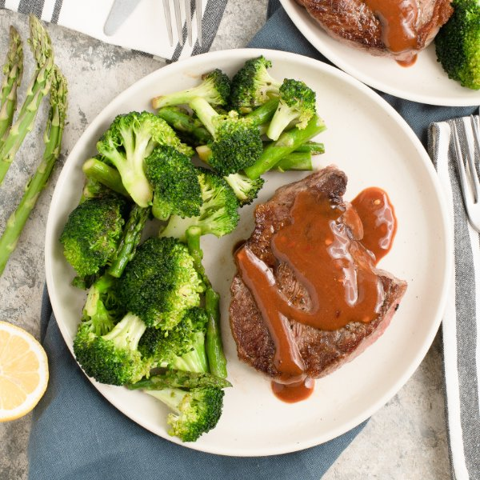

Pan Seared Ribeye with Steak Sauce & Broccoli-Asparagus Sauté

Nutrition (per serving)
618.6 kcalCalories
37.3 gProtein
22.5 gCarbs
44.1 gFat
Full nutrition table
| Calories | 618.6 kcal |
| Total fat | 44.1 g |
| Saturated fat | 16.3 g |
| Trans fat | 2.1 g |
| Cholesterol | 115.7 mg |
| Sodium | 342.7 mg |
| Carbohydrates | 22.5 g |
| Fiber | 5.3 g |
| Sugars | 12.4 g |
| Protein | 37.3 g |
| Potassium | 1057.6 mg |
| Calcium | 105.7 mg |
| Iron | 7.4 mg |
| Vitamin A | 1622.9 IU |
| Vitamin C | 89.6 mg |
| Vitamin D | 10.2 IU |
Cookware
Ingredients
- 2 small bunchesasparagus
- 2 crownsbroccoli
- 1lemon
- 1 ½ lbribeye steak
- balsamic vinegar
- black pepper
- crushed red pepper
- Dijon mustard
- extra virgin olive oil
- honey
- Italian seasoning
- ketchup
- salt
- soy sauce
- Worcestershire sauce
Steps
- Wash and dry the fresh produce.2 crowns broccoli
2 small bunches asparagus
1 lemon - Separate broccoli into bite-sized florets and cut stems into smaller pieces; place in a medium bowl and set aside.
- Preheat a large skillet over medium-high heat.
- While the skillet heats up, cut the steak into portions, pat dry with paper towels, and place on a plate; season with spices on both sides.1 ½ lb ribeye steak
1 tsp Italian seasoning
1 tsp salt
½ tsp black pepper - Once the skillet is hot, add oil and swirl to coat the bottom; add steak and cook until desired doneness, 2-5 minutes per side. Remove to a clean plate and loosely cover with aluminum foil. (Reserve skillet for later use.)4 tsp extra virgin olive oil
- Meanwhile, using a clean cutting board, snap (or cut) off woody ends of the asparagus; cut spears into 2-inch pieces and add to the bowl with the broccoli.
- When the steak is done, return the skillet to medium-high heat, add more oil, and swirl to coat the bottom. Add veggies, salt, and pepper; cook, stirring occasionally, until fork-tender, 5-7 minutes.4 tsp extra virgin olive oil
½ tsp salt
¼ tsp black pepper - Meanwhile, place ketchup, Dijon, Worcestershire, vinegar, soy sauce, honey, and crushed red pepper in a small bowl; whisk to combine the steak sauce and set aside.¼ cup ketchup
2 tbsp Dijon mustard
2 tbsp Worcestershire sauce
2 tbsp balsamic vinegar
2 tsp soy sauce
2 tsp honey
¼ tsp crushed red pepper - When the veggies are done, juice lemon into the skillet, stir to combine, and remove from heat.
- To serve, divide steak and veggies between plates; drizzle sauce over steaks and enjoy!